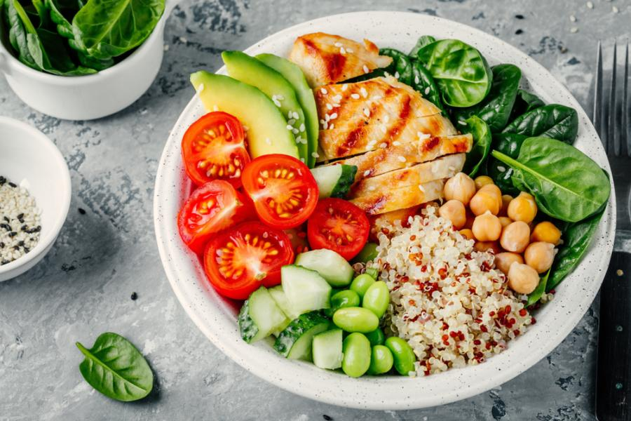
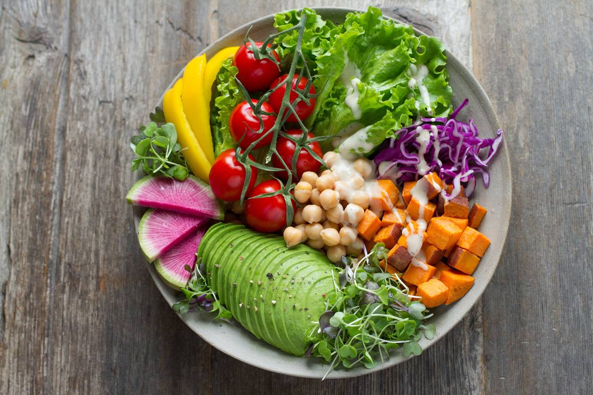

Transforme sua vida com alimentação saudável
Descubra o caminho para uma vida mais equilibrada através de escolhas alimentares inteligentes e sustentáveis.
Comece sua jornada
Por que escolher uma alimentação saudável?
Mais Energia
Alimentos nutritivos fornecem energia sustentável para suas atividades diárias.
Melhor Saúde
Uma dieta equilibrada fortalece o sistema imunológico e previne doenças.
Bem-estar Mental
Nutrientes adequados contribuem para o equilíbrio emocional e mental.
Dicas para uma Alimentação Saudável

1. Varie as cores no prato
Diferentes cores indicam diferentes nutrientes. Quanto mais colorido, mais nutritivo!
2. Beba bastante água
Mantenha-se hidratado bebendo pelo menos 2 litros de água por dia.
3. Prefira alimentos integrais
Cereais integrais fornecem mais fibras e nutrientes que os refinados.
4. Faça refeições regulares
Mantenha horários regulares para as refeições e evite pular refeições.
Entre em Contato
Fale Conosco
Tem dúvidas? Entre em contato conosco!
freshfoodacex@gmail.com